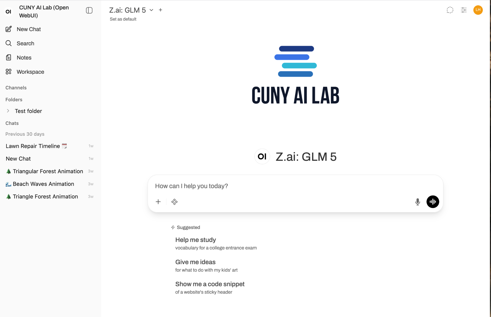
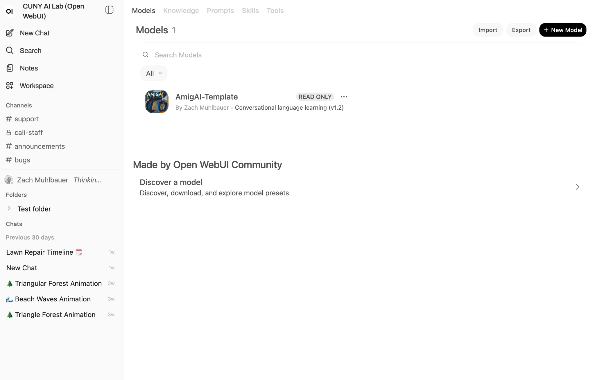
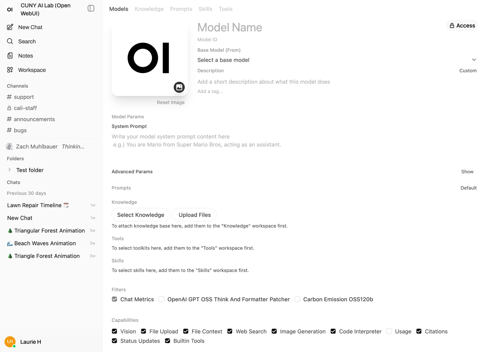

Learned how system prompts can help orchestrate and constrain AI models to address specific course goals
March 23 (This Week)
Curating Knowledge Collections
Upload syllabi, readings, and relevant sources to ground AI models in course materials
March 30
Customizing Skills & Tools
Build specialized skills, tools, and workflows tailored to your courses
Getting Started
Sign In and Navigate to Workspace
Before we begin, make sure you can access the CUNY AI Lab Sandbox.
1. Go to chat.ailab.gc.cuny.edu
Sign in with your CUNY account. If you don’t have access yet, let us know and we’ll get you set up.
2. Open Workspace
Look for Workspace in the top left, three rows below New Chat. Click it. This is where you’ll build your model card and knowledge collection.
Next: Once you’re signed in and can see the Workspace menu, you’re ready to set up your model card on the next slide.

Workspace → Models Navigate to Workspace in the sidebar, then open the Models tab.

Models List Click + New Model to create one, or open an existing model card.
Before We Start
Set Up Your Model Card
Knowledge collections attach to a model card in Workspace → Models. Complete these steps before we go further. The model card is the foundation everything else builds on today.
1. Name the model card
Give it a descriptive name tied to your course, for example ENGL 101 Writing Scaffold or History 202 Source Analysis Tool.
2. Select a base model
Choose a base model from the Sandbox (e.g., GLM-5, GPT-OSS-120b, or Kimi-k2.5). This is the underlying model your custom configuration will run on.
3. Add your system prompt
Find the System Prompt field under Model Params and paste the prompt you wrote last week.
4. Save your work
Click the Save button. Your model card is now ready for a knowledge collection.
Keep this tab open. You will return to this model card at the end of today’s exercise to attach the knowledge collection you build.

Inside the Model Card Name your model, select a base model, paste your system prompt, and save. The Knowledge section below is where today’s collection will attach.
Dry Run
Test Your Model in Chat
Your model is saved. Now test it to make sure it responds as expected before attaching a knowledge collection.
1. Click New Chat
Go back to the chat interface. Click New Chat in the top left to start a fresh conversation.
2. Toggle the model selector
At the top of the chat window, you’ll see the model name. Click the dropdown arrow next to it.
3. Select your model
Find your newly created model (e.g., ENGL 101 Writing Scaffold) in the dropdown list and select it.
4. Send a test message
Type a simple message related to your course. Send it and observe the response.
Look for: Does the model respond in the voice you configured? Does your system prompt shape the tone and approach of the answer?
Screenshot placeholder: Testing a custom model in chat
Part I
Knowledge Collections
What they are, where they live, and how they work
The Basics
What Is a Knowledge Collection?
A knowledge collection is a set of documents you upload to ground an AI model in specific course materials. Relevant passages are retrieved from these documents when responding to students.
Think of it as the reading list for your AI tool: the sources it draws on, the assignments it's grounded in, and the disciplinary context that shapes its responses.
Key distinction: The system prompt tells the model how to behave. The knowledge collection provides the source material. Together, they create a tool grounded in your teaching context.
Your model is ready. Now give it something to draw on. By the end of today, your knowledge collection will be attached directly to the model you just opened.
What you build
Hidden
System Prompt
“You are a writing scaffold…”
+
New
Knowledge Collection
syllabus.pdf, rubric.pdf…
student never sees above
👤 Student“What does the rubric say about evidence?”
🤖
AI Model
Retrieves passages from uploaded course materials
🤖 Response“The rubric asks for at least three sources cited with specific page numbers. Let’s look at what you have so far.”
What the student sees
Workspace
Where It Lives
Knowledge collections and model cards both live in the Workspace menu. Here’s how they connect:
Workspace → Knowledge
Create a collection, give it a name, and upload your course documents.
Workspace → Models
Open your model card and attach the collection under the Knowledge field. This is how the model gains access to your materials.
Your system prompt tells the model how to behave. The knowledge collection gives it something to draw on. Both are configured in the same model card.
Workspace → Knowledge Click + New Knowledge to create a collection.
Name and Describe Give your collection a name, describe its contents, and set access. Click Create Knowledge when ready.
Workspace → Models Open your model card to attach the collection.
Knowledge Field Click Select Knowledge to attach your collection to the model card.
Why Bother?
Why Knowledge Collections Matter
If you create a custom model that acts as a course assistant, a student might ask: “What should I focus on for the midterm essay?”
Without Knowledge Collection
“For a midterm essay, you should generally focus on your thesis statement, use evidence from your readings, and structure your argument clearly. Make sure to address counterarguments.”
Generic advice. No connection to the assignment, the rubric, or the course readings.
With Knowledge Collection
“Based on the assignment prompt, your essay should analyze one primary source from the Reconstruction unit using the SOAPS framework we practiced. The rubric weights evidence and sourcing at 40%. Which document are you considering?”
Grounded in the actual assignment, rubric, and course methodology.
Building Materials
What Can You Upload?
Relevant documents ground AI models in context and help shape their responses. Files you upload are stored on CUNY’s self-hosted servers and are made private by default.
Syllabi
Course schedule, learning objectives, policies, and expectations
Assignment Prompts
Instructions, requirements, and criteria for each assignment
Rubrics
Evaluation criteria so the model can reference specific expectations
Course Readings
Primary sources, articles, chapters, and excerpts students are working with
Lecture Notes
Key concepts, frameworks, and terminology from your lectures
Anonymized exemplars that model the quality you expect
Data Sets
Spreadsheets, CSV files, or structured data students analyze in labs or projects
Glossaries
Discipline-specific terminology, definitions, and key concepts for the course
Problem Sets
Exercises, practice questions, or worked examples with solutions
Lab Protocols
Step-by-step procedures, safety guidelines, and equipment instructions
Case Studies
Real-world scenarios, historical cases, or clinical examples used in coursework
Under the HoodRetrieval-Augmented Generation
How Your Documents Reach the Model
When a student asks a question, the system doesn’t feed the entire collection to the model. It searches for the most relevant passages and uses them as the basis for its response.
Chunking: Your files are split into smaller passages when uploaded
Matching: Questions are matched against those chunks
Retrieval: Closest matches are included in the model’s context window
Response: Model generates output grounded in the retrieved passages
Implication: Short, focused documents with clear headings retrieve better than long, unstructured files. In other words, the way you organize your materials matters.
👤
Student Question
“What does the rubric say about citations?”
🔍
Search Collection
Finds relevant passages from your files
🤖
AI Model + Retrieved Context
System prompt + relevant passages + student message
✅
Grounded Response
Answer references your actual course materials
Part II: Example 1
What Makes an Effective Knowledge Collection?
Starting with Composition & Writing
Composition & Writing
The Bare Minimum
WeakCollection contents:
• syllabus.pdf (14 pages, full course syllabus)
What goes wrong?
One large document retrieves poorly: retrieved passages are often irrelevant
No assignment-specific materials for the model to reference
No rubric, no readings, no examples of what good work looks like
Separate documents for different purposes: the model can find the rubric when asked about expectations
Assignment-specific prompt gives the model context for that unit
Style guide helps with formatting questions
What's still missing?
No course readings for the model to reference during analysis
No examples of strong student work to model expectations
No instructor notes on common student challenges
Composition & Writing
A Collection That Grounds Revision
StrongCollection contents:
Course Context
• syllabus.pdf: schedule, learning objectives, policies
• revision-philosophy.txt: instructor notes on what revision means in this course
Assignment Materials (Essay 1: Rhetoric in Popular Media)
• essay-1-prompt.pdf: assignment instructions and requirements
• essay-1-rubric.pdf: evaluation criteria with descriptions of each level
• common-feedback.txt: patterns from past semesters (e.g., thesis too broad, evidence not analyzed)
Reference Materials
• mla-style-guide.pdf: citation and formatting conventions
• strong-intro-examples.txt: anonymized examples of effective introductions
• revision-checklist.pdf: the same checklist students use in peer review
Individual literary text rather than an omnibus reader
Assignment prompt provides task-specific context
Critical framework document gives the model methodological grounding
What's still missing?
No rubric for the model to reference when guiding analysis
No examples of close-reading annotations or model analyses
No glossary of literary terms the course uses
Literature & Cultural Studies
A Collection That Fosters Close Reading
StrongCollection contents:
Course Context
• syllabus.pdf: schedule, texts, learning objectives
• new-criticism-framework.txt: key concepts: close reading, tension, irony, paradox, ambiguity
• literary-terms-glossary.txt: definitions of terms used in the course (diction, imagery, syntax, tone)
Assignment Materials (Close Reading Essay)
• close-reading-assignment.pdf: instructions and requirements
• close-reading-rubric.pdf: evaluation criteria for textual analysis
• annotated-passage-example.txt: model annotation showing how to move from observation to interpretation
Literary Texts (Current Unit)
• sonny-blues-baldwin.pdf: the primary text for this assignment
• passage-selections.txt: key passages the instructor has flagged for class discussion
Part III
Curation Best Practices
One Document, One Purpose
Upload separate files for syllabus, rubric, readings, and frameworks. The model retrieves better from focused documents than from large omnibus files.
Add Metadata and Headings
Include titles, authors, dates, and clear section headings. These act as retrieval anchors that help the model find the right passage.
Supply What’s Not in the Documents
Your pedagogical intent isn’t in the PDFs. A short “common-feedback.txt” or “context-notes.txt” written in your own words and priorities are more valuable than another PDF.
Update Per Unit
Swap readings and assignment materials as the semester progresses. A collection grounded in the current unit is more useful than one covering the whole course.
Watch Out
Common Pitfalls
Dumping Everything In
Uploading every reading for the entire semester dilutes retrieval quality. The model retrieves passages from the whole collection. More documents means more noise. Start small and add materials as you test.
One Giant PDF
A 200-page course reader retrieves unpredictably. Split it into individual texts. Short, well-labeled documents retrieve far better than long ones.
Forgetting the System Prompt
Your system prompt needs explicit instructions for when and how to draw on the knowledge collection attached to the model. Without that, the collection is just a pile of documents.
Assuming Full Coverage
Only retrieved passages are included in each response, not the full document. If something is critical, make it easy to retrieve: put it in its own file with a clear heading.
Part IV
Three Types of Reference Material
Approach knowledge collections in terms of three types of reference material. As we overview each one, think about which file from your course you would add first.
Course Context — Syllabus, calendar, and related course documents
Source Materials — Readings, primary sources, and reference documents for the current mini-unit, module, or class session
Type 1
Course Context
Start with the documents that establish your course’s identity: what students are learning, how they’re assessed, and what methods they use.
What are the course’s learning objectives?
What analytical framework or methodology do students use?
What are the course policies the model should know about?
Recommended uploads:
1. syllabus.pdf
- Course schedule, objectives, and policies
- Tip: Keep it under 10 pages if possible
2. [framework-name].txt
- The analytical method students use
- E.g., SOAPS, New Criticism, revision checklist
- Write it out in plain language with definitions
Consider: Is there a framework or methodology central to your course? If so, a short document (1-2 pages) explaining it in the terms you use with students could be a strong addition.
Type 2
Assignment Materials
Upload the documents that define the current task. The model needs to know what students are working on, how they’re graded, and where they typically struggle.
What is the assignment prompt?
What does the rubric prioritize?
What feedback do you give most often?
Recommended uploads:
1. [assignment]-prompt.pdf
- The actual assignment instructions
2. [assignment]-rubric.pdf
- Evaluation criteria with level descriptions
3. common-feedback.txt
- 5-10 patterns you see every semester
- E.g., "Thesis too broad," "Evidence cited but not analyzed"
4. strong-examples.txt (optional)
- Anonymized excerpts showing what good work looks like
Consider: Which assignment would benefit most? The prompt, rubric, and a short list of your most common feedback patterns would be a strong starting point.
Type 3
Source Materials
Upload the readings and reference materials students are working with in the current unit. This grounds the model in the actual texts.
What texts are students reading for this assignment?
Are there reference documents (timelines, glossaries, citation guides)?
Can you add brief metadata or context for each source?
Recommended uploads:
1. [reading-title].pdf
- Individual files per text (not one big reader)
- Add a header with: title, author, date, source
2. context-notes.txt (optional)
- 2-3 sentences of context per source
- Helps the model answer "why does this matter?"
3. [reference-guide].pdf
- Citation style guide, glossary, timeline
- Whatever students consult during the assignment
Consider: Which readings or sources are students working with right now? Individual files retrieve better than a single combined PDF.
Putting It Together
Create Your Collection
Now create the collection you’ve been thinking about.
1. Go to Workspace → Knowledge
Click + New Knowledge to start a new collection.
2. Name and describe it
Give it a clear name tied to your course and a short description of what it contains.
3. Upload your first file
Start with whichever document you identified as you worked through the three types: course context, assignment materials, or source materials.
Workspace → Knowledge Click + New Knowledge to create a collection.
Name and Describe Give your collection a name and set access to private.
Final Step
Attach Your Collection
Connect your collection to the model card you set up earlier.
1. Return to your model card
Go to Workspace → Models and open the model card you created at the start of today’s session.
2. Attach the collection
Find the Knowledge field and click Select Knowledge. Choose the collection you just created.
3. Save and test
Save the model card, open a new chat with your model, and ask a question only answerable from your collection.
Workspace → Models Open the model card you created earlier.
Attach Your Collection Click Select Knowledge to connect your collection to the model.
Coming Up
The Road Ahead
March 16
System Prompts ✓
Configured how the model responds and scaffolds learning
March 23 (Today)
Knowledge Collections ✓
Grounded the model in your course materials so it can reference real documents
March 30 (Next Week)
Skills & Tools
Build specialized skills, tools, and workflows tailored to your courses
Each workshop builds on the last. The system prompt you wrote last week now drives a model grounded in the knowledge collection you built today. Next week, you’ll extend it with custom skills and tools.